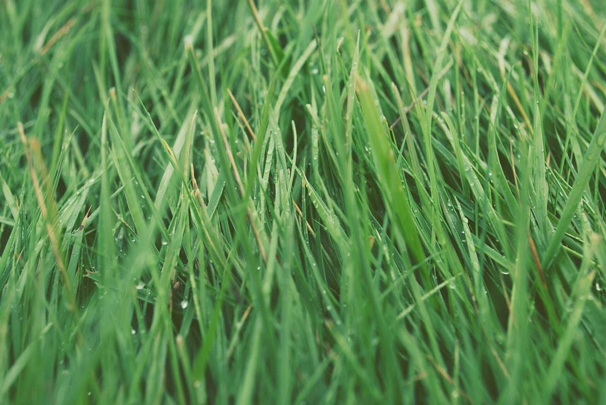
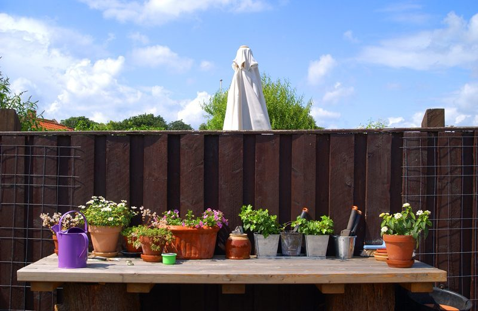
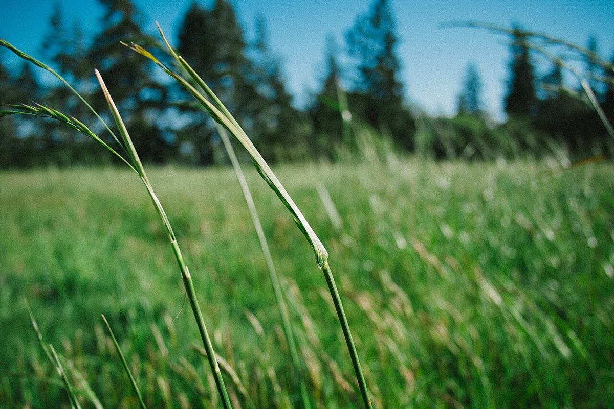

制作側の連想
「yard」を1ヤードの物差しにして
お店の名前の由来は分かりません。制作側は「yard」という言葉から、長さの単位の1ヤード(3フィート=36インチ)と、庭を意味する言葉の二つを連想しました。そこでこのサイトは、36インチの巻き尺に見立てて、1フィートごとに情報を並べる作りにしています。お店の理念や由来とは無関係の、制作側の連想です。
1ft0 – 12in
確認できていること
- 店名は「yard」、業種はカフェ
- 所在地は長野県上田市中央2丁目4-3
- Instagramのアカウントがある
- 電話番号はなし

2ft12 – 24in
準備中のこと
次の項目は、お店に確認できしだいこの欄に掲載します。憶測では書きません。
- 営業時間・定休日 準備中
- メニュー・価格 準備中
- ご予約・駐車場 準備中

3ft24 – 36in
